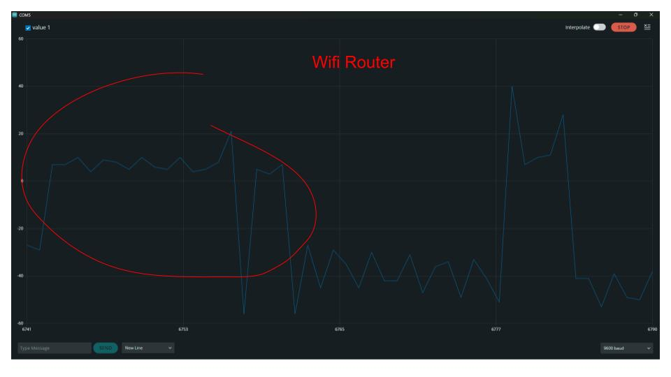
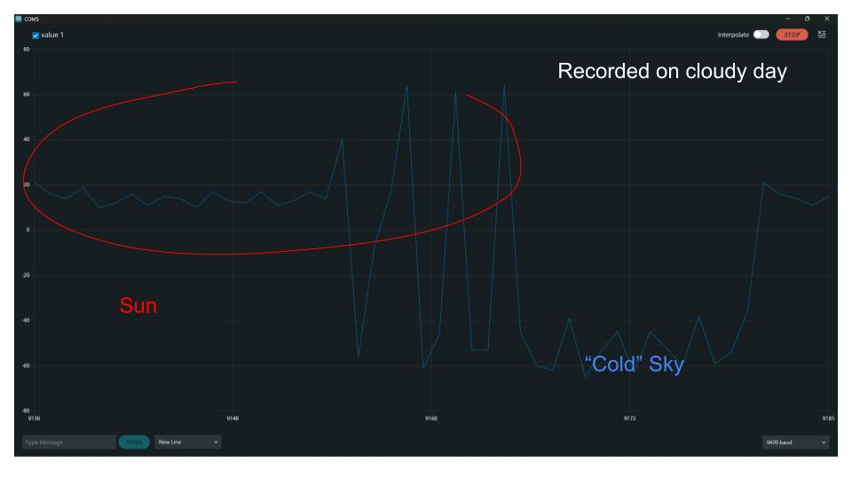
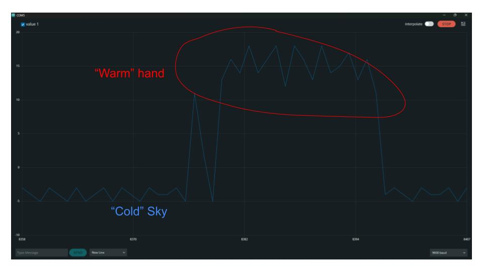

The Design
With my research completed, I turned to making my physical product. For the design, I was planning to simply measure the output from the satellite dish and build a mechanism to allow the dish to scan the sky, but faced some challenges.
end of the rod sticking out of the dish
The first mistake I made was thinking that the satellite dish measured a frequency of around 1-2GHz. This would have been optimal for observing the 1.4GHz Hydrogen Line radiation emitted by the Milky Way, which is the most frequently measured by Radio Satellites. However, the dish actually receives around 10GHz, and its Low-Noise Block Downconverter (LNB) processes the signal and reduces the frequency to 1-2GHz. This was unfortunate, but I would still be able to detect satellites and the Sun, which emit a wider range of frequencies.
I used to record the input
Another problem was the high frequency of the satellite dish's output. While 2GHz is approximately what we use for wi-fi and other wireless electronics, you still need specialized components that function at high frequencies. For example, components like diodes, that are supposed to keep current moving in one direction and block current in the other, will 'leak' and let current through both ways if the frequency changes fast enough. This means that common methods of measurement don't work, like an Arduino, so I bought a satellite finder, which is commonly used to align Satellite TV dishes.
The satellite finder only measures the total strength of the signal, so all information regarding the frequency is lost, which isn't ideal, but it would work for my project. With the absolute output of the satellite finder, I could now hook up an Arduino and record the total strength of the signal received.
Next, I needed to supply the 18V used by the satellite dish's internal components. Usually, it is provided by the TV and the receiver it is connected to. Instead, I created a power supply using batteries. This works better for measurements because batteries do not produce fluctuating voltages, unlike an AC power supply. I did not have enough time to create a mechanism to move the satellite dish automatically, but I was still able to make some measurements by manually moving the antenna.
the 18V needed for the satellite dish
I have a rudimentary radio telescope
Observations
Wifi Router: Wifi routers and other wireless devices emit lots of EM radiation, which was detectable using the satellite dish.
Sun: The sun is easily the most detectable source of all EM radiation. These readings were recorded on a cloudy day.
Thermal Radiation ("Warm" hand): Your hand is hot compared to the cool emptiness of space, making it emit significantly more thermal radiation, including radio waves.